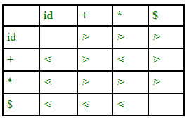
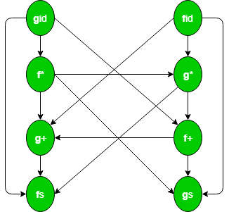
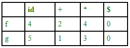

A grammar that is generated to define the mathematical operators is called operator grammar with some restrictions on grammar. An operator precedence grammar is a context-free grammar that has the property that no production has either an empty right-hand side (null productions) or two adjacent non-terminals in its right-hand side.
Examples –
This is the example of operator grammar:
E->E+E/E*E/id
However, grammar that is given below is not an operator grammar because two non-terminals are adjacent to each other:
S->SAS/a A->bSb/b
Although, we can convert it into an operator grammar:
S->SbSbs/SbS/a A->bSb/b
Operator precedence parser –
An operator precedence parser is a one of the bottom-up parser that interprets an operator-precedence grammar. This parser is only used for operator grammars. Ambiguous grammars are not allowed in case of any parser except operator precedence parser.
There are two methods for determining what precedence relations should hold between a pair of terminals:
- Use the conventional associativity and precedence of operator.
- The second method of selecting operator-precedence relations is first to construct an unambiguous grammar for the language, a grammar that reflects the correct associativity and precedence in its parse trees.
This parser relies on the following three precedence relations: ⋖, ≐, ⋗
a ⋖ b This means a “yields precedence to” b.
a ⋗ b This means a “takes precedence over” b.
a ≐ b This means a “has precedence as” b.

There is not given any relation between id and id as id will not be compared and two variables can not come side by side. There is also a disadvantage of this table as if we have n operators than size of table will be n*n and complexity will be 0(n2). In order to increase the size of table, use operator function table.
The operator precedence parsers usually do not store the precedence table with the relations; rather they are implemented in a special way. Operator precedence parsers use precedence functions that map terminal symbols to integers, and so the precedence relations between the symbols are implemented by numerical comparison. The parsing table can be encoded by two precedence functions f and g that map terminal symbols to integers. We select f and g such that:
- f(a) < g(b) whenever a is precedence to b
- f(a) = g(b) whenever a and b having precedence
- f(a) > g(b) whenever a takes precedence over b
Example – Consider the following grammar:
E -> E + E/E * E/( E )/id
The directed graph representing the precedence function:

Since there is not any cycle in the graph so we can make function table:

fid -> g* -> f+ ->g+ -> f$ gid -> f* -> g* ->f+ -> g+ ->f$
Size of the table is 2n.
One disadvantage of function table is that evev though we have blank entries in relation we got non-blank entries in function table. Blank entries are also called error. Hence error detection capability of relational table is greater than function table.
#include <stdio.h>
#include <string.h>
// function f to exit from the loop
// if given condition is not true
void f()
{
printf("Not operator grammar");
exit(0);
}
void main()
{
char grm[20][20], c;
// Here using flag variable,
// considering grammar is not operator grammar
int i, n, j = 2, flag = 0;
// taking number of productions from user
scanf("%d", &n);
for (i = 0; i < n; i++)
scanf("%s", grm[i]);
for (i = 0; i < n; i++) {
c = grm[i][2];
while (c != '\0') {
if (grm[i][3] == '+' || grm[i][3] == '-'
|| grm[i][3] == '*' || grm[i][3] == '/')
flag = 1;
else {
flag = 0;
f();
}
if (c == '$') {
flag = 0;
f();
}
c = grm[i][++j];
}
}
if (flag == 1)
printf("Operator grammar");
}
Input :3 A=A*A B=AA A=$ Output : Not operator grammar Input :2 A=A/A B=A+A Output : Operator grammar
$ is a null production here which are also not allowed in operator grammars.
Advantages –
- It can easily be constructed by hand
- It is simple to implement this type of parsing
Disadvantages –
- It is hard to handle tokens like the minus sign (-), which has two different precedence (depending on whether it is unary or binary)
- It is applicable only to small class of grammars